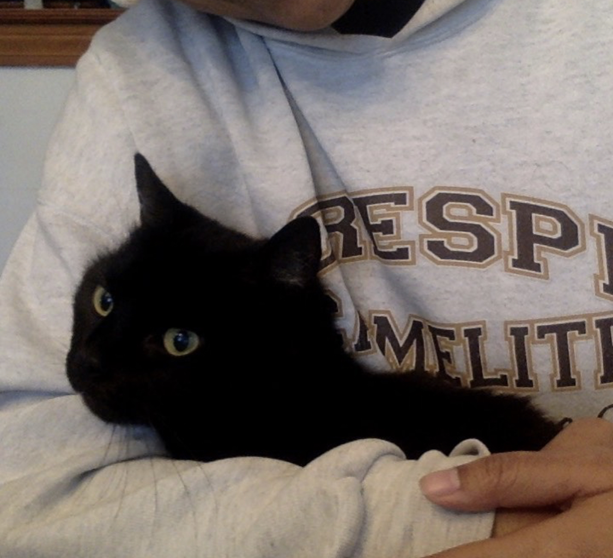

Elaona Lupetu'ulelei Lemoto
I am senior at Smith College studying Economics, Statistical and Data Science, and Mathematics. Through my courses, I have gained experience in coding, research, and teaching. Outside of my courses, I have been able to create a start-up, assist in writing an introductory statistics textbook, and help support Pasifika students in the Five Colleges. Reach out to me through the links below and let's connect!
Experience
Economic Research Assistant
As a research assistant, I was able to get hands-on Economic research experience. Not only was I able to utilize STATA and R, but I was also taught how to use ArcGIS for the purpose of this research project. In addition to this, my research partner and I were able to study different approaches and techniques through several literature reviews and personal contact by the authors.
Statistical and Data Science Tutor
As an SDS tutor, I have been able to broaden my statistical and coding technique. Students ask very interesting questions which then contributes to my own understanding of the material. Through this experience, I have learned how to think on my feet, strengthen my coding and statistical understanding, but also help students broaden theirs as well.
Research Assistant and Ancillary Writer
When first introduced to statistics, I struggled with understanding the material. It made it even more difficult given that our course heavily relied on our textbook. Therefore, that experience helped me immensely in assisting the Sociology department in writing an Introduction to Statistics textbook. I not only created questions that had real-world applications, but I ensured that the material was also easily translated and understood. I also utilized STATA and R to create pictures of distributions.
ReBike Co-Founder
In partnership with the Conway Center at Smith College, my co-founders and I created ReBike, an Eco-friendly bike start-up that connected bike owners and bike seekers. Through this experience, we learned how to think on our feet, how to pitch a product, and how to create a product from scratch. Overall, we raised $14,500 for our start-up through Smith College and the Draper Competition.
Education
Smith College
GPA: 3.5
Michigan State University
GPA: 3.875
Portfolio
American Economic Association Summer Program
This was the final project of my summer at the American Economic Association Summer Program where I looked at the possible association between childhood neighborhood characteristics and number of inventors . Using a poison likelihood estimation (ran in STATA), I found an association between a higher share of non-white races within a neighborhood and a percentage decrease in the probability of having an inventor. Also, the cool part was that I was able to personally share my research to Ben Bernanke.

ASA DataFest Competition 2019
For GGSquad2's DataFest project, we studied the Canadian Women's Rugby 7’s team data and offered two actionable steps; the first being that the players synchronize their training schedules together and on the individual level, syncing fatigue and session load and maximizing their correlation. We won best multi-level actionable solution.
SDS 293: Machine Learning Course
In our Machine Learning course, our final was to make a submission to House Prices: Advanced Regression Techniques on Kaggle using a LASSO regularized multiple regression model. In the code provided (although not all of the code utilized for this project), we scored the lowest RMSLE in our class thus winning Dr. Kim’s ML project final.
SDS 291: Multiple Regression Course
For our Multiple Regression final project, we looked at the possible association between ‘lifestyle predictors’ and the likelihood of experiencing domestic violence. Using IPUMS data from Tanzania and a logistic regression, we found that for certain wealth quintiles, there was an association with a higher odds ratio of experiencing domestic violence.
SDS 390: Structural Equation Modeling
In my most recent SDS seminar studying Structural Equation Modeling, my in-class research project studied household migrant and non-migrant behavior in Tonga with the release of the New Zealand working visa in 2007. I found that for migrants households, ‘Feeling of Community’ contributed the most to the ‘Importance of migrating’, whereas health evaluations had a negative association holding all else constant.
SDS 192: Introduction to Data Science
For our Introduction to Data Science final, our project looked at the economic costs and profit from becoming an Uber driver; essentially adding more insight into the gig economy. By using Uber data on the number of rides given by census tract in Los Angeles, we inferred the economic costs outweighing the gains given the available data and time period of project.
Skills
- R
- STATA
Interests
Outside of my classes and research, I enjoy spending time with my Pasifika Student Association family. As president, I help create events like 'Design Night' or 'Anti-Colonial' potlucks; doing my best to have Pasifika folks from all over feel at home at Smith. In addition to this, I enjoy tutoring and helping peers with Statistics, Econometrics and code questions.
When not out and about, you can find me on the squash courts! This is my second year playing on the Smith Squash Club and it's been a blast ever since I joined. If not on the courts, I'm petting Shadow (my partner's cat)
Awards & Certifications
- Janet Yellen Mentorship and Citizenship Award - AEASP
- Best Multi-Level Solution - DataFest
- 3rd Place Prize Winner - Draper Competition
- Best Sustainable Venture - Smith College Entrepreneurial Prize 2018
- Best Sustainable Venture - Smith College Entrepreneurial Prize 2017
- Best Application - Draper Competition